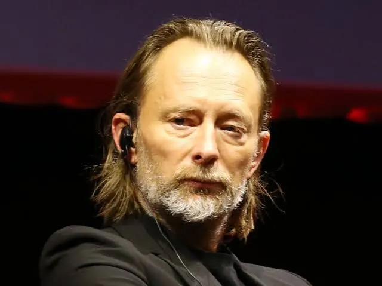
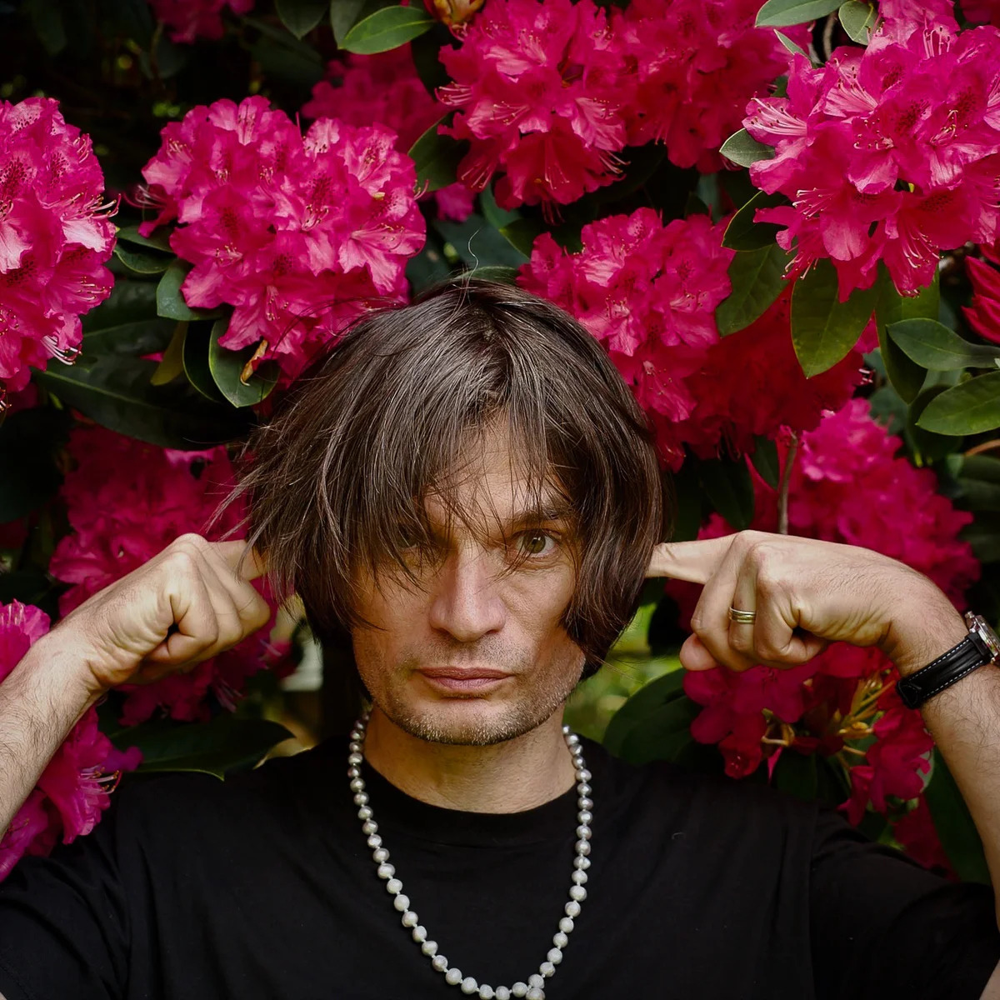
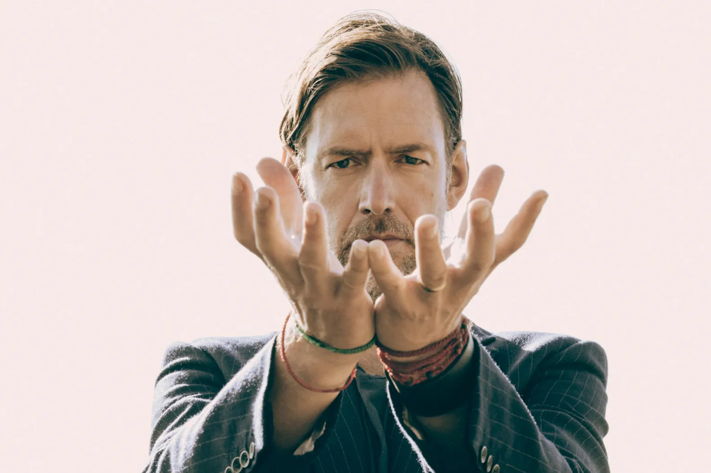
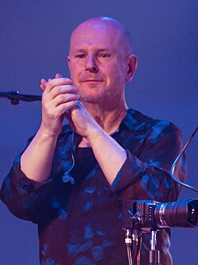

Thomas Edward "Thom" Yorke (Wellingborough, 7 de outubro de 1968) é um músico inglês, que é o principal vocalista e compositor da banda de rock Radiohead. Ele toca guitarra, baixo, teclado e outros instrumentos, e é conhecido por seu falsete. A Rolling Stone descreveu Yorke como um dos maiores e mais influentes cantores de sua geração.

Jonathan Richard Guy "Jonny" Greenwood (Oxford, 5 de novembro de 1971) é um músico britânico da banda Radiohead. Foi considerado o 48º melhor guitarrista de todos os tempos pela revista norte-americana Rolling Stone. No grupo, utiliza diversos instrumentos, como guitarra, teclados, percussão, sintetizadores, harmônica, glockenspiel, além de objetos não convencionais, como televisores e rádios.

Edward John O'Brien (Oxford, 15 de abril de 1968) é um guitarrista, compositor e membro da banda de rock Radiohead. O'Brien estudou na Abingdon School em Oxfordshire, Inglaterra, onde formou o Radiohead com colegas de escola. Ele afirmou que seu papel era "dar suporte às músicas" e apoiar o compositor, Thom Yorke. Ele cria sons e texturas ambientais usando efeitos e pedais, além de fornecer vocais de apoio.

Colin Charles Greenwood (Oxford, 26 de junho de 1969) é um baixista inglês e membro da banda de rock Radiohead. Além do baixo, Greenwood toca contrabaixo e instrumentos eletrônicos. Como deu para notar, Colin Greenwood e Jonny Greenwood são irmãos.

Philip James Selway (Oxford, 23 de maio de 1967) é um músico inglês e baterista da banda de rock Radiohead. Ele combina a bateria tradicional do rock com percussão eletrônica.
